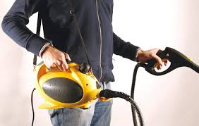

Limpiadores de vapor
los limpiadores de vapor son una herramienta versátil y eficaz para limpiar una variedad de superficies en el hogar utilizando vapor de agua.
Los limpiadores de vapor calientan el agua hasta convertirla en vapor a alta temperatura, que luego es expulsado a través de una boquilla o manguera para limpiar y desinfectar superficies.
El vapor de alta temperatura mata hasta el 99.9% de las bacterias, virus, y ácaros del polvo, lo que ayuda a desinfectar y purificar las superficies tratadas.
El vapor caliente ablanda y disuelve la suciedad y la grasa de manera rápida y eficiente, lo que facilita su eliminación con un paño o cepillo.
Los limpiadores de vapor suelen venir con una variedad de accesorios y herramientas diseñadas para adaptarse a diferentes tipos de superficies y tareas de limpieza.
Es importante seguir las instrucciones del fabricante para un uso seguro y eficaz del limpiador de vapor.
